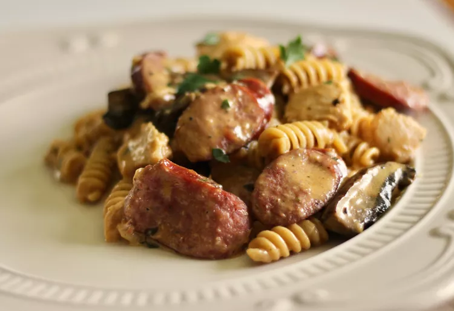

One-Pot Cajun Chicken and Sausage Alfredo Pasta

Description
This one-pot Cajun chicken and sausage Alfredo pasta is so simple to make and absolutely packed with flavor. Tender chunks of chicken with smoky pieces of sausage in a rich and delicious homemade Cajun-flavored Alfredo sauce.
Ingredients
- 4 tablespoons extra-virgin olive oil
- 1 pound chicken, cut into bite-sized pieces
- ½ teaspoon kosher salt
- Freshly ground black pepper to taste
- 14 ounces smoked sausage, sliced on the diagonal
- 4 cloves garlic, minced
- 2 cups low-sodium chicken broth
- 1 ¼ cups heavy cream
- 2 cups dried penne pasta
- 1 ½ tablespoons Cajun seasoning, plus more to taste
- ½ cup freshly shredded Parmesan cheese
- 1 tablespoon minced Italian flat-leaf parsley
Steps
- Heat olive oil in a large, covered cooking pot over medium-high heat. Season chicken with salt and pepper. Cook and stir chicken in hot oil until browned, 5 to 7 minutes.
- Add sausage to chicken in the pot and continue cooking until sausage is lightly browned, about 5 minutes more. Stir in garlic and cook for about 2 minutes. Add chicken broth, heavy cream, pasta and Cajun seasoning. Stir together and bring to a simmer over medium-high heat, about 5 minutes.
- Reduce heat to low, cover the pot, and cook until pasta is tender, 15 to 20 minutes.
- Remove the pot from heat and stir in Parmesan cheese. Stir in parsley and sprinkle with aditional Cajun seasoning.
Home